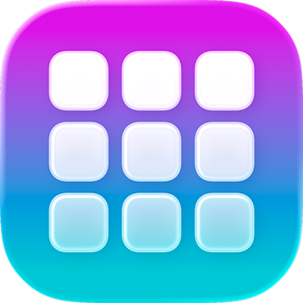

LaunchMe update v3.0.
Hello Dock
A new home for your everyday Mac
LaunchMe is incredible on its own. With Notch, your favorite tools found a home at the top of your screen. Now, with update v3.0, it is time to meet the other half of your workspace. Hello Dock!
LaunchMe Dock is a customizable Dock for Mac that brings apps, files, folders, Workflows, and widgets into one bar. It works together with the LaunchMe full-screen launcher, Notch, and music player, so the things you use every day feel connected. Your favorite apps, the project you are working on, your music, and your next focus session. All right where you need them.
This is a big new chapter for LaunchMe. A Dock that can be as simple as a few app icons or as personal as an entire workspace. Different colors, different widgets, different setups for different parts of your day. Sounds like magic. Works like LaunchMe!
Your apps, folders, and files. One place.
Your Dock should make starting a task feel easy. Add apps from the full-screen launcher with Add to Dock, drag supported app items into the Dock, or choose Add application… from its context menu. You can also copy your app pins from the original macOS Dock in settings, so your familiar setup is a starting point.
Already organized your apps into LaunchMe folders? Add those folders too. Or add a real Finder folder and browse its files in a compact panel right inside the Dock. Open a document, take a Quick Look, copy its path, or drag it into another app. Your work folder becomes something you can reach without opening another Finder window first.
Drag a file onto an app icon to open it with that app. If the app is inside a supported folder or group, pause over the folder to reveal it, then keep dragging to the app. Small details like this make moving between tasks feel so much smoother.
A little less clutter. A lot more room.
With the Active apps folder, running apps can live behind one icon. Your main Dock stays focused on the apps and widgets you chose, while everything currently open is still nearby. Prefer seeing running apps in the Dock row? You can choose that instead.
Add Finder, Downloads, and Trash independently in settings. Downloads puts newly added files first and lets you open or drag completed downloads straight from its drawer. Keep what helps your day, arrange it how you like, and use separators to give each group a little room.
Widgets that make your Dock more useful
LaunchMe Dock goes far beyond app icons. Right-click its background, open Widgets, and choose the tools you want beside your apps. A clock for a different time zone. A calendar with today's events. Weather for home and the city you are visiting. You can add multiple Calendar and Weather widgets, so your Dock can answer more than one question at a glance.
System widgets bring CPU, RAM, network speed, temperature, and disk information into your workspace. Hover over supported CPU and RAM cards to see the top three apps. Temperature readings depend on the sensors available on your Mac. A compact view for a quick check or a chart for a closer look. It's up to you.
And there is room for personality too. Add a GIF in Square, Wide, or Panorama style, or choose LaunchMe animations with cute cats. Useful and delightful can absolutely live in the same Dock.
Your music and your focus, together
Music widgets bring Apple Music and Spotify controls into your Dock in different sizes and styles. When a song deserves more space, open the full-screen music player for an immersive listening experience. From a small widget beside your apps to artwork across the screen, your music stays part of the same workspace.
The Pomodoro widget shares its session with LaunchMe Notch. Start a focus session in Dock, then check its progress in Notch while working in a full-screen app. Pause or change it in one place and the other follows. One session, wherever you need to see it.
Prefer a little background atmosphere? Add Background Sounds for macOS background audio with volume control. Build a work setup with your project apps, a focus timer, and a sound you like. Getting started becomes a small ritual you actually enjoy.
Dock Spaces. A Dock for every part of your day.
Your work setup and your evening setup probably do not need the same tools. Dock Spaces let you save separate Dock layouts with their own apps, widgets, appearance, and size settings. Create one for work, one for study, and one for music. Or make a setup for each project.
Switch with the Spaces controls above the Dock, or point at the Dock and press ⌘← / ⌘→. You can also hold ⌘ and swipe horizontally on the trackpad. Your whole Dock changes with you.
Dock Spaces are independent of the full-screen launcher's LaunchMe Spaces and macOS desktop Spaces. You choose your Dock setup separately. Learn how to create and copy layouts in the Dock Spaces guide.
A unique Dock for each monitor
Your workspace does not have to stop at one screen. Show LaunchMe Dock on a selected display or across all connected displays. With separate Dock Spaces per screen, each monitor can keep its own active setup.
Imagine project apps and files on your main display, with music, weather, and system stats on the second. Or a compact Dock on your MacBook and a wider layout on your external monitor. Adjust size and maximum length, and let Auto height fit the row or keep your chosen size and scroll through it.
You can even use a floating position, remembered separately for each display. The Dock adapts to the way you use your screens. See the multi-display setup guide for the settings.
Make it look like your Mac
LaunchMe is known for deep customization, and Dock follows the same idea. Choose Liquid Glass, a solid color, or an image for the Dock and widget backgrounds. Fine-tune them separately, follow your Mac's light or dark appearance, or build a look around your LaunchMe theme.
Start with a ready-made preset for widgets and colors together. Use a color palette to change the mood, or drop a photo into Palette by reference to get Balanced, Dark, and Soft color suggestions. Preview one, keep it, and make it yours.
Enable Custom Icons Sync to bring your custom LaunchMe app icons into the Dock, or use Clear Colored Icons for supported apps. Add a Glowing Wallpaper widget to turn an image into a ring-styled desktop background, with controls for its look and time-based brightness. Your tools and your desktop can finally feel like parts of the same idea.
Dock + Notch + Launcher. Even better together.
The best part is how everything works together. Keep your broader app library in the full-screen launcher, pin everyday tools in Dock, and use Notch for quick access at the top of the screen. Add a Workflow to launch the apps and Finder folders you need for a task in one click.
Dock makes the next action easy to reach. Notch keeps your focus session visible. The launcher gives the rest of your apps room to breathe. Less searching through windows, fewer little interruptions, and more of your Mac arranged around what you are actually doing.
Say hello to your Dock
Open LaunchMe menu bar → Dock settings → General and enable Dock, or turn on LaunchMe Dock in the main app's General settings. Add your first app or folder, then explore the widget gallery and appearance options.
Basic app and folder access is available without Pro. Widgets, presets, Dock Spaces, Workflows, and premium appearance controls require LaunchMe Pro. Dock is currently in Beta. The Dock getting-started guide walks you through setup and permissions.
A few things you might want to know
What is LaunchMe Dock?
LaunchMe Dock is a customizable Dock for Mac that brings apps, Finder folders, Workflows, and widgets into one bar. It works with the LaunchMe full-screen launcher, Notch, and music player.
Can I use LaunchMe Dock with the macOS Dock?
Yes. You can use both together, copy your app pins from the macOS Dock, or keep the system Dock hidden while using LaunchMe Dock. LaunchMe restores the previous system Dock settings when those controls are turned off or LaunchMe quits.
Does LaunchMe Dock support multiple monitors?
Yes. You can show LaunchMe Dock on one display or all connected displays. With Pro, separate Dock Spaces let each screen keep its own apps, widgets, and appearance.
Meet your new Dock
Make your Mac feel yours
Explore LaunchMe Dock

New features since v2.0
Dock is the next big chapter. Here are all the unique additions listed under New Features in the changelog for versions above 2.0, through v2.08.2. Features repeated across releases appear once.
- Waves, a new Vinyl style for the full-screen music player.
- Liquid Glass intensity that follows macOS 27 system settings throughout the app.
- A Pomodoro widget in Notch.
- Liquid Glass tint intensity controls for glass elements, including folder backgrounds, in Appearance settings.
- Glass background settings for category cards.
- More folder grid layouts: 3×5 through 3×8, 4×5 through 4×8, and 5×5 through 5×8, available by right-clicking inside a folder or in Settings → General.
- Timer sounds and a choice of sounds in Notch settings.
- Compact and Large Notch widget sizes, selectable from the context menu.
- Shift-selection of multiple apps to create a folder from the selection.
- A–Z app sorting inside folders.
- Always On mode.
- A Particles visual in the full-screen music player.
- A Spaces panel accessible from the menu, with one-click installation of LaunchMe Spaces.
- A vertical music player style.
- Glowing Beats in the full-screen music player.
- Music Art Wallpaper in Appearance settings.
- Screenshots in the Notch Clipboard.
- Spaces Themes: export Spaces with settings and wallpaper to share, or install themes from the website in one click.
- Vinyl mode in the full-screen music player.
- A full-screen music player with song artwork, opened from the Music widget in Notch or the main grid, including Spotify animated artwork support.
- A Clock widget with 11 styles.
- An updated Calendar widget.
- Notch with widgets, Clipboard, AirDrop, Pocket, Timer, Spaces sync, apps, and folders.
- Apple Music animated artwork in Full Cover style for all Music widget sizes in Notch and the main grid.
- A finger-spread gesture for closing LaunchMe.